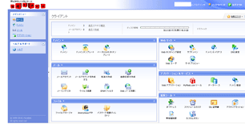
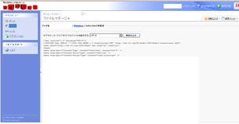

格安レンタルサーバーの＠ＷＡＰＰＹ
＠ＷＡＰＰＹはＧＭＯグループの格安レンタルサーバーです。
以前まではＷＡＤＡＸの格安サーバーの位置づけでしたが、現在はＷＡＤＡＸとともにＧＭＯグループになっています。
人気のＷＡＤＡＸの場合、マルチドメイン対応のプランはある程度の費用がかかるため、格安で利用したい方はこちらの「＠ＷＡＰＰＹ」を検討されてみるとよいでしょう。
→ ＠ＷＡＰＰＹ
料金プランには「ライトプラン」と「エコノミープラン」、「ミドルプラン」があり、最安の「ライトプラン」では初期費用無料で年間一括5,500円（税込）、月額換算458円で利用できます。
「ライトプラン」でもマルチドメイン対応で３つまでドメインを利用でき、MySQLデータベースも５つまで利用できます。また国内サーバーなので安心して利用できます。
管理画面は海外製の「Plesk」ですが、日本語対応のため特に不便はありませんでした。

ファイルマネージャーでのファイルの編集もできます。

当サイト運営者はCMSを利用しておりませんが、WordPressやMovableTypeなども普通に利用できます。「Plesk」のファイルマネージャーでは更新がしづらいかと思いますので、CMSを設置してサイトを更新されることをおすすめします。
どちらかというとＷＡＤＡＸのレンタルサーバーの方が知名度は高いかと思いますが、ＷＡＤＡＸでマルチドメインを利用するには最安の「ブロンズ」プランでは対応していないため、「シルバー」プラン以上を契約する必要があります。
格安でマルチドメインを利用したい場合には、こちらの＠ＷＡＰＰＹも検討されてみることをおすすめします。管理画面が「Plesk」ですので、使ったことのある方は簡単かと思います。
個人向け格安レンタルサーバー
- エックスサーバー （高機能・人気・おすすめ・無料SSL）
- さくらインターネット （格安・人気・老舗・無料SSL）
- お名前.comサーバー （GMOグループ・人気・無料SSL）
- ロリポップ！ （初心者向け・人気・格安・無料SSL）
- コアサーバー （高機能・上級者向け・無料SSL）
- ヘテムル （無料SSL）
- スターサーバー （格安・無料SSL）
- XREA （格安・老舗・無料SSL）
- グーペ （お店向け・無料SSL）
- ConoHa WING（コノハ ウィング） （高速・無料SSL）
- mixhost （LiteSpeed・成人向け可・無料SSL）
- カラフルボックス （LiteSpeed・cPanel・無料SSL）
- WebARENA（ウェブアリーナ） （格安・老舗・無料SSL）
- Z.comレンタルサーバー （高速・格安SSL）
- リトルサーバー （格安・無料SSL）
- ABLENET（エイブルネット） （格安・老舗）
- エクストリム （格安・無料SSL）
- JSNレンタルサーバー （格安・老舗・無料SSL）
- Fc2 lite （格安・無料SSL）
- マイサーバー1000 （無料SSL）
- クイッカ （IP分散・cPanel）
- ドメインキング （Plesk）
- ＠ＷＡＰＰＹ （格安・Plesk）
- ハッスル （格安）